Nakraku Stash is an ultra-compact, high-density desktop window stashing utility for Windows. Snapshot running application coordinates and browser tabs with one hotkey. Restore pixel-perfect layouts instantly.

No bloated SaaS fluff. Only high-density metrics, zero-elevation Win32 FFI, and local persistence.
Enumerates top-level windows via DWM and User32 without requiring UAC admin prompts for standard desktop applications.
Preserves pixel-perfect coordinates across negative screen bounds, virtual displays, and high-DPI scaling configurations.
Companion MV3 extension for Chrome, Edge, and Brave synchronizes open tabs over a sandboxed loopback WebSocket (127.0.0.1:48123).
100% offline asymmetric cryptographic verification against hardware fingerprints stored in Windows Credential Manager.
Sessions and settings persist in SQLite with Write-Ahead Logging and 256 MB memory-mapped I/O for instant reads and zero crash corruption.
Obsidian dark theme, 38px custom frameless titlebar, monospace metrics, and 60 FPS table virtualization for 150+ open windows.
Declutter your desktop in milliseconds without losing your workflow context.
Press Ctrl+Shift+N. Nakraku snapshots all visible windows, memory usage, and browser tabs, minimizing them in ~145 ms.
Reclaim gigabytes of system memory. Switch tasks, join meetings, or game on a totally clear desktop without background noise.
Press Ctrl+Shift+R. Closed apps relaunch, windows snap back to their exact monitors, and browser tabs reopen in ~418 ms.
Start free with core capabilities. Upgrade to Pro for unlimited workspaces with zero subscriptions.
Perfect for focused individual task stashing.
For power users, developers, and multi-monitor setups.
Track the newest engine updates, optimizations, and features.
Runs on Windows 10 (Build 19041+) and Windows 11 (x64).
Installs per-user into LocalAppData without requiring Administrator privileges. Includes automatic background updates.
Download .exe (Setup)sha256sums.txt on GitHubWiX-based MSI installer with RFC 4122 GUID for automated enterprise deployment via Group Policy (GPO) and Microsoft Intune.
Download .msi (Enterprise)msiexec /i Nakraku-Stash-x64.msi /quietCompanion extension for Google Chrome, Microsoft Edge, and Brave. Connects locally over loopback WebSocket.
Download Extension (.zip)